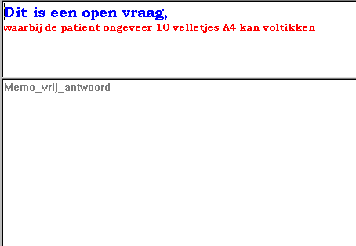

Vraag met Open Antwoord
Vragenlijst Module
Gebruikers Documentatie
TestOrganizer
Eigenschappen 
Onderstaand plaatje geeft een goed overzicht van de belangrijkste eigenschappen:
- De vraagtekst is een Rich Edit veld, dus ruime opmaak-mogelijkheden
- De patiënt kan ongeveer 10 velletjes A4 intikken
- De eerste 20 (echte) karakters komen in het SPSS-export bestand

Mogelijke Verbeteringen
- begrenzing op de hoeveelheid in te tikken informatie
- font van het antwoordveld instelbaar
© Copyright Instrumentele Dienst, 1999-2004